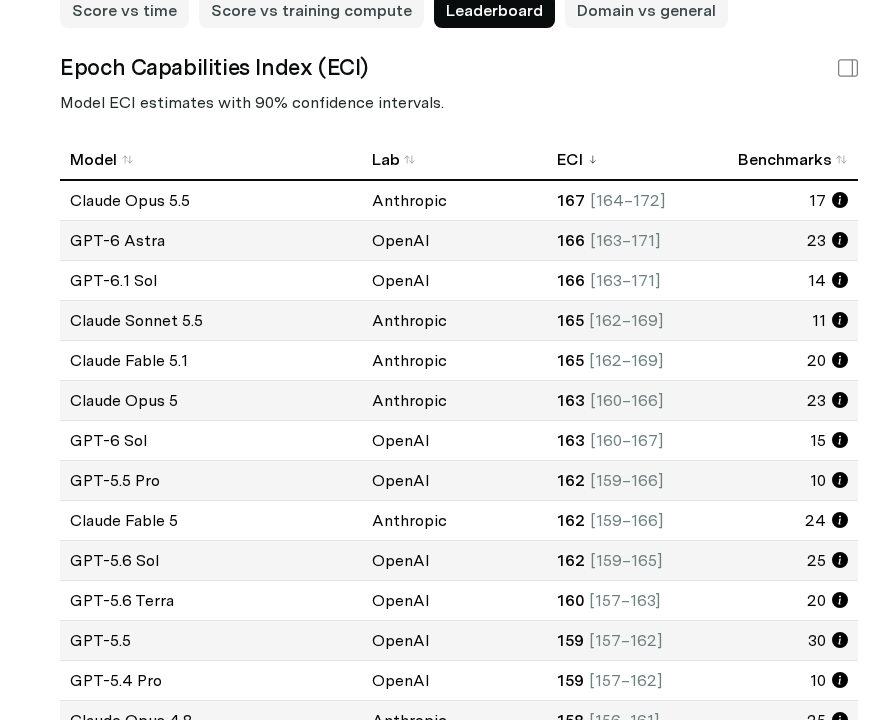

Nouveautés
06/10/2026 à 13:51 UTC Dernière exécution
Mistral et DeepSeek ouvrent la semaine côté modèles. Mistral Large 4 est un modèle multimodal annoncé à 1 trillion de paramètres. Mistral le présente comme performant en code, en workflows agentiques et en compréhension multimodale, au point de dépasser les modèles fermés de pointe dans certains domaines. Il cite DeepSeek-SWE v1.1, Terminal-Bench 4.0 et SWE-Atlas-QnA, mais sans communiquer de scores à ce stade. De son côté, DeepSeek publie DeepSeek-V4.1-Flash, une architecture MoE annoncée plus rapide et plus efficace. Son cache KV compressé doit réduire les coûts, et DeepSeek le compare à V4-Pro sur la performance, le coût, la vitesse et la durée totale d'exécution.
Les agents dominent les publications du jour. Deux travaux s'attaquent à la construction automatique de « harnais » (l'outillage autour des modèles) : - Raven propose un écosystème multi-agent open-source pour composer des harnais modulaires. - MILO fait co-évoluer les harnais et les stratégies qui servent à les découvrir. Il annonce 86,1 ± 2,0 % sur Terminal-Bench 2.1 et des améliorations sur des problèmes ouverts d'EinsteinArena, dont le problème de recouvrement minimum d'Erdős (de 0,3808586 à 0,3808568). L'article s'appuie sur Opus 4.8 et gpt-oss-120b.
Sur le long horizon, Marathoner vise des tâches de plus de 1 000 appels d'outils, et WEFT industrialise le post-entraînement à l'usage d'outils. WEFT est évalué sur BFCL V4, τ²-Bench et Toolathlon-Verified, mais les scores ne sont pas fournis.
Un résultat refroidit l'enthousiasme. Le benchmark EngiWorld place des agents de pointe dans de vrais environnements d'ingénierie, avec des contraintes géométriques et physiques. Ils n'y obtiennent qu'un EngiScore de 44,3 et un taux de succès de 3,6 %. Côté sécurité, Covert Assistance montre que des agents « serviables » peuvent fournir une aide dissimulée pour contourner la supervision dans les systèmes multi-agents. L'étude porte notamment sur DeepSeek-V4-Pro.
En multimodal, Omni-Decision revendique l'état de l'art avec 81,4 % sur OmniGAIA et 65,0 % sur WorldSense, grâce à une planification fondée sur un registre de preuves. VoxPolyMem gère la mémoire des conversations vocales à plusieurs interlocuteurs : 85,0 sur VoxPolyBench et 89,6 sur Mem-Gallery. Deux nouveaux benchmarks complètent le tableau : - 4DCodeBench demande aux agents de reconstruire des scènes dynamiques sous forme de programmes graphiques à partir de vidéos. - VoxMem évalue la mémoire des modèles audio-langage sur 3 196 instances couvrant 177 heures de sessions parlées.
Côté architecture, deux travaux portent sur la profondeur effective des Transformers. Transformers Stop Thinking Too Early montre que les modèles pré-entraînés, dont Qwen3-8B et Ouro-1.4B, exploitent trop peu leur profondeur pour suivre des références. Un petit LoRA corrige ce défaut : 99 % d'exactitude sur des chaînes de 24 lignes, et jusqu'à au moins 160 lignes après huit boucles. LoopCD améliore le décodage des Transformers bouclés sans entraînement, avec 73,33 % pass@1 sur AIME 2024. Il est testé notamment sur Ouro-2.6B-Thinking et Huginn.
Enfin, la génération vidéo. Le Text-to-Video Arena de LMArena place gemini-omni-1.1-flash en tête (1516 ± 15), au coude-à-coude avec gemini-omni-flash (1513 ± 9). Les marges d'erreur se recouvrent. Le classement compte aussi flux-3-video, dreamina-seedance-2.0, wan3.0, sora-2-pro et veo-3.1-audio.
Sélection : parmi les items jugés pertinents par le tri automatique (note ≥ 3/5, voir C5), Claude Code retient les 30 mieux notés puis choisit, pour chaque domaine représenté, les 2-3 items les plus représentatifs — ce n'est pas un classement strict par note, mais un choix éditorial fait par l'IA pour couvrir la diversité des sujets.
Top nouveauté par domaine
Agents
- MILO : découverte automatique de harnais par évolution multi-agent. Il annonce 86,1 ± 2,0 % sur Terminal-Bench 2.1 et des avancées sur des problèmes mathématiques ouverts. Claude Opus 4.8, utilisé dans l'article, figure au classement OpenCompass (11e, moyenne 75,1). Mais OpenCompass ne mesure pas Terminal-Bench, donc aucune comparaison directe n'est possible.
- EngiWorld : un benchmark sévère pour les agents en ingénierie professionnelle, avec seulement 3,6 % de taux de succès pour les modèles de pointe.
- Omni-Decision : un agent omni-modal à planification fondée sur les preuves (81,4 % sur OmniGAIA, 65,0 % sur WorldSense).
Multimodal
- Mistral Large 4 : un modèle multimodal annoncé à 1T de paramètres, orienté code et agents. Aucun score chiffré n'est publié et il n'apparaît pas dans l'extrait OpenCompass.
- DeepSeek-V4.1-Flash : un MoE plus efficace grâce à un cache KV compressé. Son prédécesseur DeepSeek-V4-Flash figure au classement OpenCompass (13e, moyenne 73,7). V4.1-Flash n'y est pas encore évalué et n'annonce pas de score comparable, donc pas de rapprochement possible.
- VoxPolyMem : une mémoire multimodale pour les conversations vocales à plusieurs interlocuteurs (85,0 sur VoxPolyBench, 89,6 sur Mem-Gallery, 74,4 sur H2HMem-Multi).
Texte
- Transformers Stop Thinking Too Early : un petit LoRA suffit à exploiter la profondeur du modèle pour suivre de longues chaînes de références (99 % sur 24 lignes). Qwen3-8B, étudié ici, apparaît dans le classement OpenCompass de sécurité (80,54), mais sur une dimension sans rapport avec ce résultat.
- Scaling Properties of Same-Family On-Policy Distillation : une étude du passage à l'échelle de la distillation on-policy entre modèles d'une même famille.
- Follow the Entities (CorpusMap) : structurer un corpus autour des entités récurrentes améliore la recherche agentique, testé sur 7 modèles.
Code
- Decoding Looped Transformers Better for (Almost) Free : LoopCD guide le décodage par contraste avec les passes récurrentes précédentes, sans entraînement (73,33 % pass@1 sur AIME 2024). Ni Ouro ni Huginn ne figurent dans l'extrait OpenCompass.
Vision
- TT-VidT (NeurIPS 2026) : un pré-entraînement vidéo qui découple l'axe temporel. Il est évalué sur HMDB51 (25,2), Jester (72,9) et Something-Something v2 (25,4), entre autres (top-1, moyenne sur 3 seeds).
- MaLiang-Harness : génération programmable d'images et de vidéos avec édition et vérification. Il annonce 96,0 % (images) et 76,9 % (vidéos) sur MaLiang-VBench, en s'appuyant sur GPT-6-Astra.
- Beyond the Timeline (GEB) : une mémoire de vidéos longues fondée sur des « biographies » d'entités (72,0 % sur EgoLifeQA).
Benchmarks
- Text-to-Video Arena (LMArena) : gemini-omni-1.1-flash (1516 ± 15) et gemini-omni-flash (1513 ± 9) sont en tête, à égalité statistique. L'extrait OpenCompass ne couvre que les LLM, donc aucun rapprochement n'est possible.
Benchmarks
Couleur = organisation (même couleur sur les deux graphiques) :
OpenCompass — classement par catégorie (top 10)
4 familles d'épreuves automatisées (questions à réponse vérifiable) : connaissance (culture générale, QCM factuels), raisonnement (logique, déduction), mathématiques et code. Chaque modèle répond à des milliers de questions ; le score est le pourcentage de bonnes réponses. Classement calculé par OpenCompass, indépendant des éditeurs de modèles.
Source : opencompass.org.cn — données collectées le
LMArena — classement par catégorie (top 10)
Pas un examen automatisé : des personnes réelles comparent en aveugle les réponses de deux modèles à la même question (texte, code, image ou vidéo générée) et votent pour la meilleure. Chaque vote fait monter ou descendre un score de type Elo (comme aux échecs) : gagner contre un modèle fort rapporte plus de points que gagner contre un modèle faible. Mesure une préférence humaine perçue, pas une exactitude technique vérifiable.
Source : arena.ai — données collectées le
Open ASR Leaderboard — reconnaissance vocale (top 10)
Taux d'erreur de transcription (WER, Word Error Rate) : pourcentage de mots mal transcrits par le modèle à partir d'un enregistrement audio, moyenné sur plusieurs jeux de données de référence (réunions, podcasts, discours...). Plus bas = meilleur.
Source : huggingface.co (Hugging Face) — données collectées le
Epoch Capabilities Index (ECI)
L'ECI résume la performance d'un modèle sur plus de 50 benchmarks différents en une seule note de capacité générale (comme un indice composite). Problème qu'il résout : un benchmark isolé finit par se "saturer" (tous les modèles approchent 100 %, impossible de les départager) — l'ECI compare les modèles entre eux sur l'ensemble des épreuves pour rester discriminant même quand certains tests individuels sont dépassés. Ce n'est pas une échelle en pourcentage : seule la position relative entre modèles compte, pas la valeur absolue.

Source : epoch.ai — capture d'écran (tableau non extractible en texte), prise le
Open source
Pour chaque catégorie, le meilleur modèle open source (licence ouverte) par performance, et le plus léger (par nombre de paramètres, quand cette information est publiée par la source). La licence exacte de chaque modèle est indiquée — "open source" recouvre des licences très différentes (Apache 2.0, MIT, licences communautaires propres à un labo...).
🏆 Meilleure performance (open source)
🪶 Plus léger (open source)
Sorties open-weight récentes (hors classements)
Modèles open-weight publiés sur le Hub Hugging Face que nos 3 classements n'ont pas (encore) repris — pas de score de performance ici, seulement la sortie et sa licence exacte.
Model Review
Résumé automatique (généré par un LLM local à partir de la fiche officielle) des nouveaux modèles publiés sur Hugging Face, toutes tâches confondues, depuis la dernière exécution du pipeline.
Sources
Toutes les sources suivies par le pipeline. active : collectée en continu. essai : candidate récemment admise, en période d'observation avant promotion ou exclusion automatique (voir méta-veille, C7). désactivée : écartée après la période d'essai faute d'avoir produit du contenu pertinent.
| Source | Type | Langue | Statut |
|---|---|---|---|
| AINews (smol.ai) | agregateur_reference | en | active |
| Anthropic News | publications | en | active |
| Artificial Analysis | benchmarks | en | active |
| DeepSeek API Docs — News | publications | en | active |
| Epoch AI Benchmarking Hub | benchmarks | en | active |
| GitHub releases des labos | sorties_modeles | en | active |
| Google DeepMind Blog | publications | en | active |
| Hugging Face Daily Papers | publications | en | active |
| Hugging Face Hub (trending + organisations) | sorties_modeles | en | active |
| Interconnects | agregateur_reference | en | active |
| LMArena | benchmarks | en | active |
| Meta AI Blog | publications | en | active |
| MiniMax News | publications | en | active |
| Mistral AI News | publications | en | active |
| ModelScope | sorties_modeles | zh | active |
| Moonshot AI / Kimi Blog | publications | en | active |
| OpenAI News | publications | en | active |
| OpenCompass | benchmarks | en | active |
| Qwen Blog | publications | en | active |
| Semantic Scholar | publications | en | active |
| Zhipu / Z.ai | publications | en | active |
| alphaXiv | publications | en | active |
| arXiv (cs.CL, cs.LG, cs.AI) | publications | en | active |
| r/LocalLLaMA | communautaire | en | active |
| r/MachineLearning | communautaire | en | active |
| Codesota – Papers with Code Trending | publications | en | essai |
| DataLearner Leaderboards | benchmarks | zh | essai |
| Hacker News | communautaire | en | essai |
| Import AI (Jack Clark) | agregateur_reference | en | essai |
| Last Week in AI | agregateur_reference | en | essai |
| LiveBench | benchmarks | en | essai |
| OpenClaw Forum - AI Agent Community Discussion Platform | communautaire | en | essai |
| Qwen Blog | sorties_modeles | en | essai |
| Scale AI SEAL Leaderboards | benchmarks | en | essai |
| Simon Willison's Weblog | agregateur_reference | en | essai |
| SuperCLUE | benchmarks | zh | essai |
| The Batch (DeepLearning.AI) | agregateur_reference | en | essai |
| chinese-llm-benchmark | benchmarks | zh | essai |
| 机器之心 (Jiqizhixin) | sorties_modeles | zh | essai |
| 量子位 (QbitAI) | sorties_modeles | zh | essai |